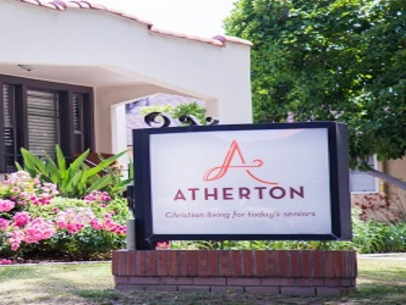

Ethan Winn
My name is Ethan Winn. I'm currently attending University of Riverside for a Bachelor degree in Sociology. I attented Pasadena City College for my first two years of college. While attending Pasadena City College I was able to obtain my AA-T degree in Psychology. I decided to transfer to Riverside to further my education and meet new people on the way.
Outside of school, I enjoy hanging out with friends and shopping. I also enjoy exploring new places and eating at new spots. I am currently working at a retirement home in the dietary section.
Experience
Reseller
• Find rare clothes at thrift stores
• Resell clothes I don't wear anymore
• Have reselled over 50+ items
Teaching Assistant
• Ran sessions to help students struggling with the subject
• Reviewed and graded student exams/homework
Education
UC Riverside
Portfolio
